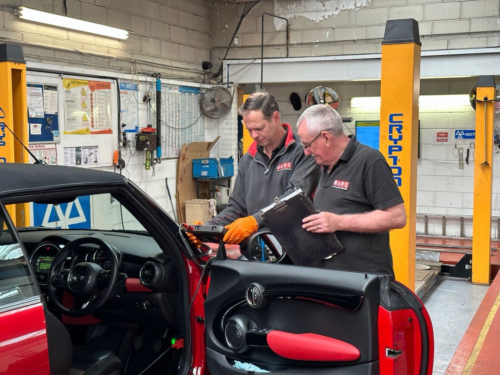
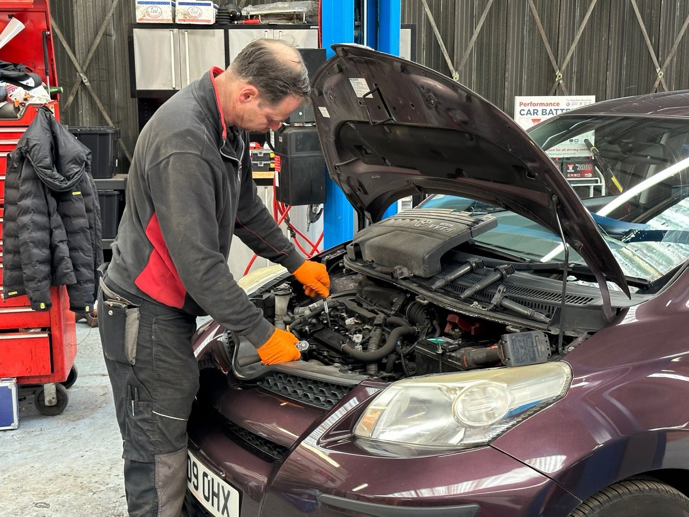
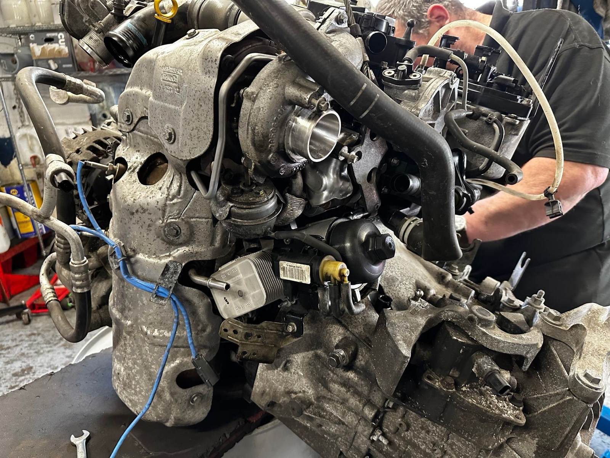
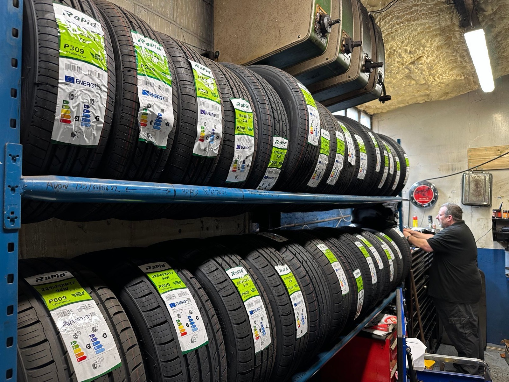

Trustworthy
As local Bishop's Stortford mechanics our reputation has grown throughout the years.
Matts Auto Repair Services is a family run local independent garage located in Bishops Stortford town centre.
Or call us on 01279 653494
Six things every customer gets — signed off before your keys go back.
As local Bishop's Stortford mechanics our reputation has grown throughout the years.
We have the latest equipment in the industry which help us get the best and accurate results for every customer.
We are a local business that is here to serve the community.
You will not find a better car mechanics in Bishop's Stortford for the price and service.
Based just outside the town centre of Bishop's Stortford our car garage site is large and secure.
We are Retail Motor Industry approved so you know you are in safe hands.

To ensure that your vehicle meets safety and environmental standards, it is essential to have it undergo an MOT test. This test examines various aspects of your vehicle to ensure it meets the required standards.

Keep that car healthy!
At M.A.R.S., we pride ourselves on being able to service all makes and models of vehicles. Additionally, we offer servicing options that cater to a variety of needs and budgets, starting from just £89. For an oil and filter change is now between £120–£150.
If your vehicle is still under manufacturer warranty, you can rest assured that we use only genuine parts to ensure your warranty remains valid. To keep your car performing at its best, we recommend servicing it annually, regardless of whether it has reached its mileage limit or not.
Get a quote
We do it all!
At our garage, we offer a comprehensive range of repair services to keep your vehicle in top shape — exhaust repairs, suspension and steering work, alternator replacements, cooling system repairs, and cambelt and clutch replacements.

Keep good contact with the road!
The contact between your car and the road is vital to ensure your safety, and the tyres are the key components that make this possible. We offer a wide range of tyres in various sizes, types, and brands to suit your budget and preferences — from budget to premium.
We stock and receive deliveries of tyres throughout the day. As a proud fitter for blackcircles.com, you can order and pay for your tyres online and have them fitted by us at your convenience.
Book tyre fittingWe make sure that every job is checked, double checked... and then checked again before we sign it off.
We make sure that every job is checked, double checked... and then checked again before we sign it off.
All of our Bishops Stortford mechanics are car enthusiasts and it reflects in our work.
Our management team look closely at our customer service and love to hear feedback so they can continue to provide the best auto repairs in Bishops Stortford.
We think if we provide the best service at competitive prices that our customers will always choose us as their mechanics based in Bishops Stortford.
A testament to our unwavering commitment to excellence.
Pick a slot for your MOT, service or repair online. Waiting slots can be booked in advance — or pop into town while we work, it's only 2 minutes away.
Fill in the form and we’ll come right back to you — or give the workshop a call.